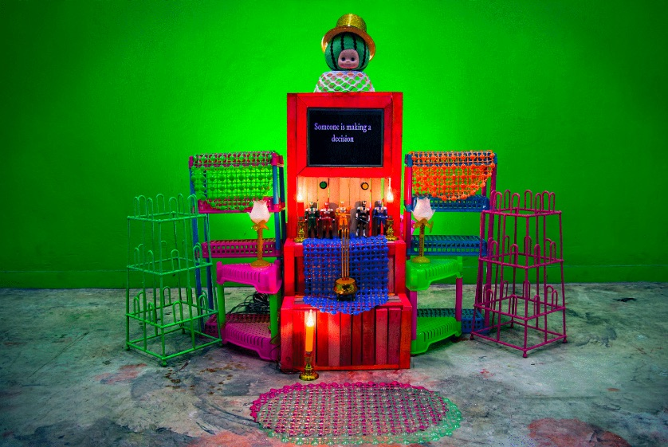
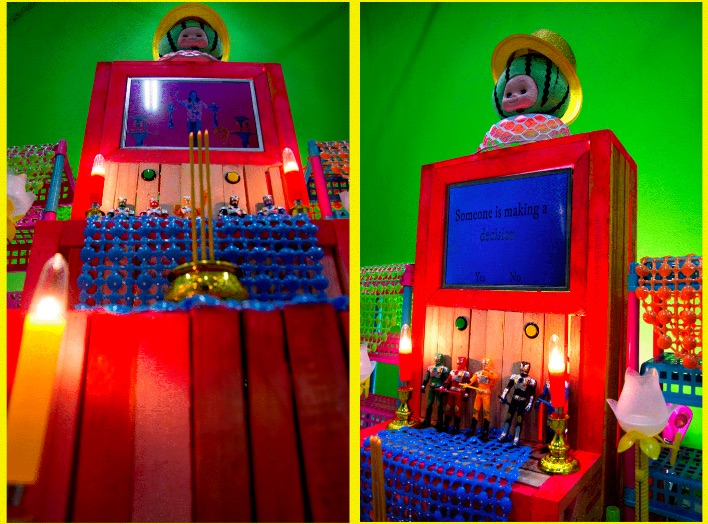
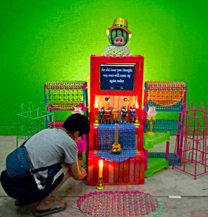

Give thanks
Give Thanks is an interactive art installation presented as part of an exhibition and residency at the Bangkok Arts and Culture Center in Bangkok, Thailand. The work was created during a summer residency in Bangkok with UCLA MFA students and undergraduate students from Silpakorn University art department.
Give Thanks is an installation based on the rituals and automated animatronic devices installed at temples throughout Bangkok. Historically, those seeking prayers or fortune will perform specific rituals (for achieving "merit") or pay donations toward reaching one's desired success. This may include performing specific dances of gratitude upon reaching major milestones, or if one is able, paying others to perform these rituals in place. A number of automated animatronics can be found at the largest temples, along with a request for donation.
Give Thanks serves as an interactive work to bring the participant good fortune. The user may press a button to initiate the creation of a (random) fortune. This fortune may be accepted or rejected. Once a fortune is accepted, the user signals an affirmation with another button, which triggers an automated digital dance to be played as a symbolic token of thanks.
Give Thanks was programmed in Javacript with P5.JS by Lee Tusman. Prototyped buttons with Makey Makey and Arduino. For Silpakorn University-DMA Exchange exhibit at BACC / Bangkok Art and Culture Center project collaborators: Ku Siriwich Sodprasert, Jutamad Thammatonsiri, Tuangkamol Thongburisute
Links: Give Thanks display  